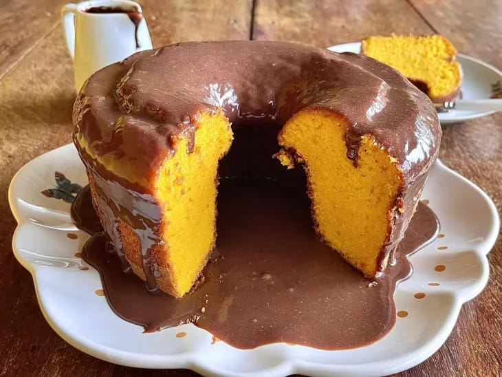
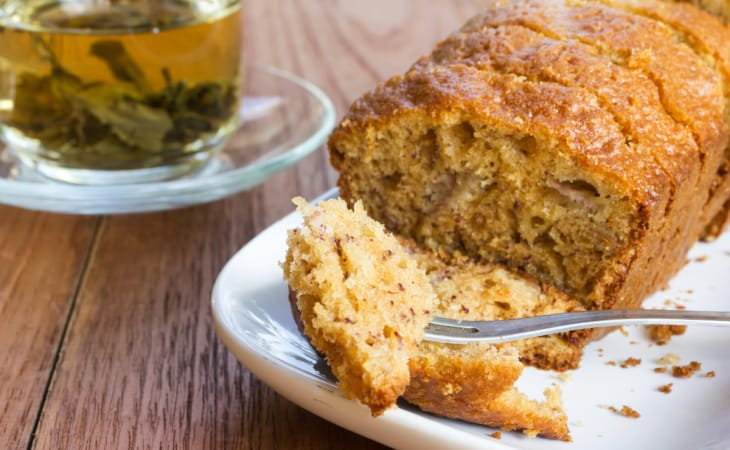
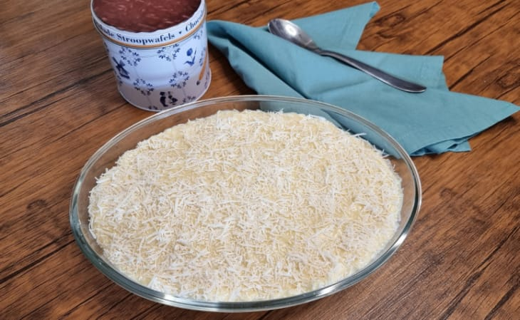

-
Bolo de cenoura de liquidificador
Ingredientes da massa
3 cenouras médias (cerca de 360 gramas) descascadas e cortadas em rodelas ,4 ovos,1 xícara de chá de óleo de milho,1 e 1/2 xícara de chá de açúcar,2 xícaras de chá de farinha de trigo,1 colher de sopa de fermento químico em pó (fermento para bolo),1 pitada de sal, Manteiga e farinha de trigo para untar
Ingredientes da calda
1 caixa de leite condensado, 1 colher de sopa de manteiga sem sal, 4 colheres de sopa de chocolate em pó (ou 7 colheres de sopa de achocolatado), 100 gramas de creme de leite.
-
Bolo de banana fofinho
Ingredientes
3 ovos, 3 colheres de sopa de manteiga (ou margarina), 2 xícaras de chá de açúcar, 4 bananas maduras amassadas com o garfo, 2 e 1/2 xícaras de chá de farinha de trigo, 1 xícara de chá de leite, 1 pitada de sal, 1 colher de chá de fermento químico em pó, Açúcar com canela em pó para polvilhar (2 colheres de chá de cada).
-
Delícia de abacaxi com coco
Ingredientes para o creme de abacaxi
600 g de abacaxi em cubinhos, 1/2 xícara de chá de açúcar, 500 ml de água, 2 caixas de gelatina sabor de abacaxi (caixa com 20 g), 2 caixas de creme de leite, 1/2 caixa de leite condensado.
Ingredientes para o creme de coco
2 colheres de sopa de amido de milho, 500 ml de leite integral, 1 e 1/2 caixa de leite condensado, 1 caixa de creme de leite, 200 g de coco ralado, 1 colher de sopa de manteiga.